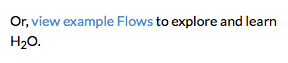
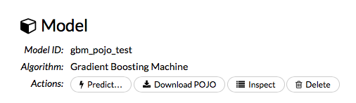

This document describes how to use H2O's generated MOJO and POJO models.
About generated models
H2O-generated MOJO and POJO models are intended to be easily embeddable in any Java environment.
The only compilation and runtime dependency for a generated model is the h2o-genmodel.jar
file produced as the build output of this package.
There are subtle differences between POJOs and MOJOs especially in the main.java file and in
specifying the model output. If you are just getting started, refer to the Quick start sections
for MOJOs and POJOs first, then
look at the documentation for the hex.genmodel.easy package.
The following topics are covered here:
POJOs
MOJOs
What is a POJO?
H2O allows you to convert the models you have built to a
Plain Old Java Object (POJO).
POJOs allow users to build a model using H2O and then deploy the model to score in real-time.
Note: POJOs are not supported for XGBoost, GLRM, or Stacked Ensembles models.
POJO Quick start
Step 1 (in terminal window 1): Start H2O
$ java -jar h2o.jar
Step 2 (in a web browser): Build model
- Go to http://localhost:54321
- Click "view example Flows" near the right edge of the screen. Refer to the following screenshot:

- Click "GBM_Airlines_Classification.flow"
- If a confirmation prompt appears, click "Load Notebook"
- From the "Flow" menu, choose "Run all cells"
- Scroll down and find the "Model" cell in the notebook. Click the Download POJO button (shown in the following screenshot):

- NOTE: The instructions below assume the POJO model was downloaded to the "Downloads" folder.
Step 3 (in a *new* terminal window - H2O must still be running in the first terminal window): Download model pieces
$ mkdir experiment
$ cd experiment
$ mv ~/Downloads/gbm_pojo_test.java .
$ curl http://localhost:54321/3/h2o-genmodel.jar > h2o-genmodel.jar
Step 4 (in terminal window 2): Create the main program
Create a new file called main.java (for example, using vim main.java) with the following contents.
Note that the modelClassName must match the downloaded model name.
{@code
import java.io.*;
import hex.genmodel.easy.RowData;
import hex.genmodel.easy.EasyPredictModelWrapper;
import hex.genmodel.easy.prediction.*;
public class main {
private static String modelClassName = "gbm_pojo_test";
public static void main(String[] args) throws Exception {
hex.genmodel.GenModel rawModel;
rawModel = (hex.genmodel.GenModel) Class.forName(modelClassName).newInstance();
EasyPredictModelWrapper model = new EasyPredictModelWrapper(rawModel);
//
// By default, unknown categorical levels throw PredictUnknownCategoricalLevelException.
// Optionally configure the wrapper to treat unknown categorical levels as N/A instead
// and strings that cannot be converted to numbers also to N/As:
//
// EasyPredictModelWrapper model = new EasyPredictModelWrapper(
// new EasyPredictModelWrapper.Config()
// .setModel(rawModel)
// .setConvertUnknownCategoricalLevelsToNa(true)
// .setConvertInvalidNumbersToNa(true)
// );
RowData row = new RowData();
row.put("Year", "1987");
row.put("Month", "10");
row.put("DayofMonth", "14");
row.put("DayOfWeek", "3");
row.put("CRSDepTime", "730");
row.put("UniqueCarrier", "PS");
row.put("Origin", "SAN");
row.put("Dest", "SFO");
BinomialModelPrediction p = model.predictBinomial(row);
System.out.println("Label (aka prediction) is flight departure delayed: " + p.label);
System.out.print("Class probabilities: ");
for (int i = 0; i < p.classProbabilities.length; i++) {
if (i > 0) {
System.out.print(",");
}
System.out.print(p.classProbabilities[i]);
}
System.out.println("");
}
}
}
Step 5 (in terminal window 2): Compile and Run
$ javac -cp h2o-genmodel.jar -J-Xmx2g -J-XX:MaxPermSize=128m gbm_pojo_test.java main.java
# Linux and OS X users
$ java -cp .:h2o-genmodel.jar main
# Windows users
$ java -cp .;h2o-genmodel.jar main
The following output displays:
Label (aka prediction) is flight departure delayed: YES
Class probabilities: 0.4790490513429604,0.5209509486570396
Extracting generated models from H2O
Generated models can be extracted from H2O in the following ways:
From the H2O Flow Web UI:
When viewing a model, click the "Download POJO" button at the top of the model cell
(refer to the example in the "Quick Start" section).
You can also preview the POJO inside Flow, but it will only show the first 1000
lines or so in the web browser, truncating large models.
From R:
The following code snippet represents an example of H2O building a model and downloading its
corresponding POJO from an R script:
{@code
library(h2o)
h2o.init()
path <- system.file("extdata", "prostate.csv", package = "h2o")
h2o_df <- h2o.importFile(path)
h2o_df$CAPSULE <- as.factor(h2o_df$CAPSULE)
model <- h2o.glm(y = "CAPSULE",
x = c("AGE", "RACE", "PSA", "GLEASON"),
training_frame = h2o_df,
family = "binomial")
h2o.download_pojo(model)
}
From Python:
The following code snippet represents an example of H2O building a model and downloading its
corresponding POJO from a Python script:
{@code
import h2o
h2o.init()
from h2o.estimators.glm import H2OGeneralizedLinearEstimator
path = "http://s3.amazonaws.com/h2o-public-test-data/smalldata/prostate/prostate.csv.zip"
h2o_df = h2o.import_file(path)
h2o_df['CAPSULE'] = h2o_df['CAPSULE'].asfactor()
model = H2OGeneralizedLinearEstimator(family = "binomial")
model.train(y = "CAPSULE",
x = ["AGE", "RACE", "PSA", "GLEASON"],
training_frame = h2o_df)
h2o.download_pojo(model)
}
From Java:
TODO: provide pointer of doing this directly from Java
From Sparkling Water:
The following code snippet represents an example of H2O building a model and downloading its
corresponding POJO from a Sparkling water script:
{@code
import org.apache.spark.h2o._
val h2oContext = H2OContext.getOrCreate(sc)
import h2oContext._
import org.apache.spark.examples.h2o._
import java.io.File
val dataFile = "examples/smalldata/allyears2k_headers.csv.gz"
val airlinesData = new H2OFrame(new File(dataFile))
import _root_.hex.tree.gbm.GBM
import _root_.hex.tree.gbm.GBMModel.GBMParameters
val gbmParams = new GBMParameters()
gbmParams._train = airlinesData
gbmParams._response_column = 'IsDepDelayed
gbmParams._model_id = water.Key.make("model")
gbmParams._ntrees = 5
gbmParams._max_depth = 2
val gbm = new GBM(gbmParams)
val model = gbm.trainModel.get
import water._
import _root_.hex._
import java.net.URI
import water.serial.ObjectTreeBinarySerializer
def exportPOJOModel(model : Model[_, _,_], destination: URI): URI = {
val destFile = new File(destination)
val fos = new java.io.FileOutputStream(destFile)
val writer = new model.JavaModelStreamWriter(false)
try {
writer.writeTo(fos)
} finally {
fos.close()
}
destination
}
exportPOJOModel(model, new File("./GbmModel.java").toURI)
}
Use cases
The following use cases are demonstrated with code examples:
Reading new data from a CSV file and predicting on it
The {@link hex.genmodel.tools.PredictCsv} class is used by the H2O test harness to make
predictions on new data points.
Getting a new observation from a JSON request and returning a prediction
See the Consumer loan application github repository.
A user-defined-function called directly from hive
See the H2O World 2015 Training github repository.
What is a MOJO?
A MOJO (Model Object, Optimized) is an alternative to H2O's currently available POJO. As with
POJOs, H2O allows you to convert models that you build to MOJOs, which can then be deployed
for scoring in real time.
Notes:
- MOJOs are supported for AutoML, Deep Learning, DRF, GBM, GLM, GLRM, K-Means, Stacked Ensembles, SVM, Word2vec, and XGBoost algorithms.
- MOJOs are only supported for encodings that are either default or Enum.
Benefit of MOJOs over POJOs
While POJOs continue to be supported, some customers encountered issues with large POJOs not
compiling. (Note that POJOs are not supported for source files larger than 1G.) MOJOs do not
have a size restriction and address the size issue by taking the tree out of the POJO and using
generic tree-walker code to navigate the model. The resulting executable is much smaller and
faster than a POJO.
At large scale, new models are roughly 20-25 times smaller in disk space, 2-3 times faster
during "hot" scoring (after JVM is able to optimize the typical execution paths), and 10-40 times
faster in "cold" scoring (when JVM doesn't know yet know the execution paths) compared to POJOs.
These efficiency gains are larger the bigger the size of the model.
H2O conducted in-house testing using models with 5000 trees of depth 25. At very small scale
(50 trees / 5 depth), POJOs were found to perform approximately 10% faster than MOJOs for binomial
and regression models, but 50% slower than MOJOs for multinomial models.
MOJO Quick start
MOJOs are built in much the same way as POJOs. The example code below
shows how to start H2O and then build a model using either R or Python.
Step 1: Start H2O, then build and extract the model
The examples below describe how to create a model using R and Python. The
download_mojo() function saves the model as a zip file. You can
unzip the file to view the options used to build the file along with each
tree built in the model. Note that each tree file is saved as a binary file type.
Build and extract a model using R
- Open a terminal window and start r.
- Run the following commands to build a simple GBM model.
library(h2o)
h2o.init(nthreads=-1)
path <- system.file("extdata", "prostate.csv", package="h2o")
h2o_df <- h2o.importFile(path)
h2o_df$CAPSULE <- as.factor(h2o_df$CAPSULE)
model <- h2o.gbm(y="CAPSULE",
x=c("AGE", "RACE", "PSA", "GLEASON"),
training_frame=h2o_df,
distribution="bernoulli",
ntrees=100,
max_depth=4,
learn_rate=0.1)
- Download the MOJO and the resulting h2o-genmodel.jar file to a new experiment folder. Be sure to specify the entire path for the MOJO, not just the relative path.
modelfile <- h2o.download_mojo(model, path="~/experiments/", get_genmodel_jar=TRUE)
print("Model saved to " + modelfile)
Model saved to /Users/user/GBM_model_R_1475248925871_74.zip"
Build and extract a model using Python
- Open a new terminal window and start python.
- Run the following commands to build a simple GBM model.
import h2o
from h2o.estimators.gbm import H2OGradientBoostingEstimator
h2o.init()
h2o_df = h2o.load_dataset("prostate.csv")
h2o_df["CAPSULE"] = h2o_df["CAPSULE"].asfactor()
model=H2OGradientBoostingEstimator(distribution="bernoulli",
ntrees=100,
max_depth=4,
learn_rate=0.1)
model.train(y="CAPSULE",
x=["AGE","RACE","PSA","GLEASON"],
training_frame=h2o_df)
-
Download the MOJO and the resulting h2o-genmodel.jar file to a new experiment folder. Be sure to specify the entire path for the MOJO, not just the relative path.
modelfile = model.download_mojo(path="~/experiment/", get_genmodel_jar=True)
print("Model saved to " + modelfile)
Model saved to /Users/user/GBM_model_python_1475248925871_888.zip
Step 2: Compile and Run the MOJO
- Open a *new* terminal window and change directories to the experiment folder:
$ cd experiment
- Create your main program in the experiment folder by creating a new file
called main.java (for example, using "vim main.java"). Include the following contents.
Note that this file references the GBM model created above using R.
import java.io.*;
import hex.genmodel.easy.RowData;
import hex.genmodel.easy.EasyPredictModelWrapper;
import hex.genmodel.easy.prediction.*;
import hex.genmodel.MojoModel;
public class main {
public static void main(String[] args) throws Exception {
EasyPredictModelWrapper model = new EasyPredictModelWrapper(MojoModel.load("GBM_model_R_1475248925871_74.zip"));
RowData row = new RowData();
row.put("AGE", "68");
row.put("RACE", "2");
row.put("DCAPS", "2");
row.put("VOL", "0");
row.put("GLEASON", "6");
BinomialModelPrediction p = model.predictBinomial(row);
System.out.println("Has penetrated the prostatic capsule (1=yes; 0=no): " + p.label);
System.out.print("Class probabilities: ");
for (int i = 0; i < p.classProbabilities.length; i++) {
if (i > 0) {
System.out.print(",");
}
System.out.print(p.classProbabilities[i]);
}
System.out.println("");
}
}
GBM and DRF return classProbabilities, but not all MOJOs will return a classProbabilities field. Refer to the ModelPrediction definition for each
algorithm to find the correct field(s) to access. This is available in the H2O-3 GitHub repo at:
https://github.com/h2oai/h2o-3/tree/master/h2o-genmodel/src/main/java/hex/genmodel/easy/prediction.
In addition to classProbabilities, in GBM and DRF you can also choose to generate the leafNodeAssignments field, which will show the decision path through each tree. Note that this may slow down the MOJO as it adds computation. Below is the Java code showing how return the leaf node assignment:
import java.io.*;
import hex.genmodel.easy.RowData;
import hex.genmodel.easy.EasyPredictModelWrapper;
import hex.genmodel.easy.prediction.*;
import hex.genmodel.MojoModel;
public class main {
public static void main(String[] args) throws Exception {
EasyPredictModelWrapper.Config config = new EasyPredictModelWrapper.Config().setModel(MojoModel.load("GBM_model_R_1475248925871_74.zip")).setEnableLeafAssignment(true);
EasyPredictModelWrapper model = new EasyPredictModelWrapper(config);
RowData row = new RowData();
row.put("AGE", "68");
row.put("RACE", "2");
row.put("DCAPS", "2");
row.put("VOL", "0");
row.put("GLEASON", "6");
BinomialModelPrediction p = model.predictBinomial(row);
System.out.println("Has penetrated the prostatic capsule (1=yes; 0=no): " + p.label);
System.out.print("Class probabilities: ");
for (int i = 0; i < p.classProbabilities.length; i++) {
if (i > 0) {
System.out.print(",");
}
System.out.print(p.classProbabilities[i]);
}
System.out.println("Leaf node assighnments: ");
for (int i=0; i < p.leafNodeAssignments; i++) {
if (i > 0) {
System.out.print.(p.leafNodeAssignments[i]);
}
}
System.out.println("");
}
}
-
Compile and run in terminal window 2.
$ javac -cp h2o-genmodel.jar -J-Xms2g -J-XX:MaxPermSize=128m main.java
# Linux and OS X users
$ java -cp .:h2o-genmodel.jar main
# Windows users
$ java -cp .;h2o-genmodel.jar main
The following output displays:
Has penetrated the prostatic capsule (1 yes; 0 no): 0
Class probabilities: 0.8059929056296662,0.19400709437033375
How to view a MOJO model
A java tool for converting binary mojo files into human viewable graphs is packaged with H2O.
This tool produces output that "dot" (which is part of Graphviz) can turn into an image.
(See the Graphviz home page for more information.)
Here is example output for a GBM model:

From R:
The following code snippet shows how to download a MOJO from R and run the PrintMojo tool on
the command line to make a .png file. To better control the look and feel of your tree, we
provide two options for PrintMojo. ``--decimalplaces`` (or ``-d``) allows you to control the
number of decimal points shown for numbers. ``--fontsize`` (or ``-f``) controls the font size.
The default font size is 14. When using this option, be careful not to choose a font size that
is so large that you cannot see your whole tree. We recommend using a font size no larger than
20.
library(h2o)
h2o.init()
df <- h2o.importFile("http://s3.amazonaws.com/h2o-public-test-data/smalldata/airlines/allyears2k_headers.zip")
model <- h2o.gbm(model_id = "model",
training_frame = df,
x = c("Year", "Month", "DayofMonth", "DayOfWeek", "UniqueCarrier"),
y = "IsDepDelayed",
max_depth = 3,
ntrees = 5)
h2o.download_mojo(model, getwd(), FALSE)
# Now download the latest stable h2o release from http://www.h2o.ai/download/
# and run the PrintMojo tool from the command line.
#
# (For MacOS: brew install graphviz)
java -cp h2o.jar hex.genmodel.tools.PrintMojo --tree 0 -i model.zip -o model.gv -f 20 -d 3
dot -Tpng model.gv -o model.png
open model.png
Using an XGBoost MOJO with Maven
If you declare a dependency on h2o-genmodel, then you also have to include the h2o-genmodel-ext-xgboost dependency if you are planning to use XGBoost models. For example:
<groupId>ai.h2o</groupId>
<artifactId>xgboost-mojo-example</artifactId>
<version>1.0-SNAPSHOT</version>
<dependencies>
<dependency>
<groupId>ai.h2o</groupId>
<artifactId>h2o-genmodel-ext-xgboost</artifactId>
<version>3.20.0.3</version>
</dependency>
<dependency>
<groupId>ai.h2o</groupId>
<artifactId>h2o-genmodel</artifactId>
<version>3.20.0.3</version>
</dependency>
</dependencies>